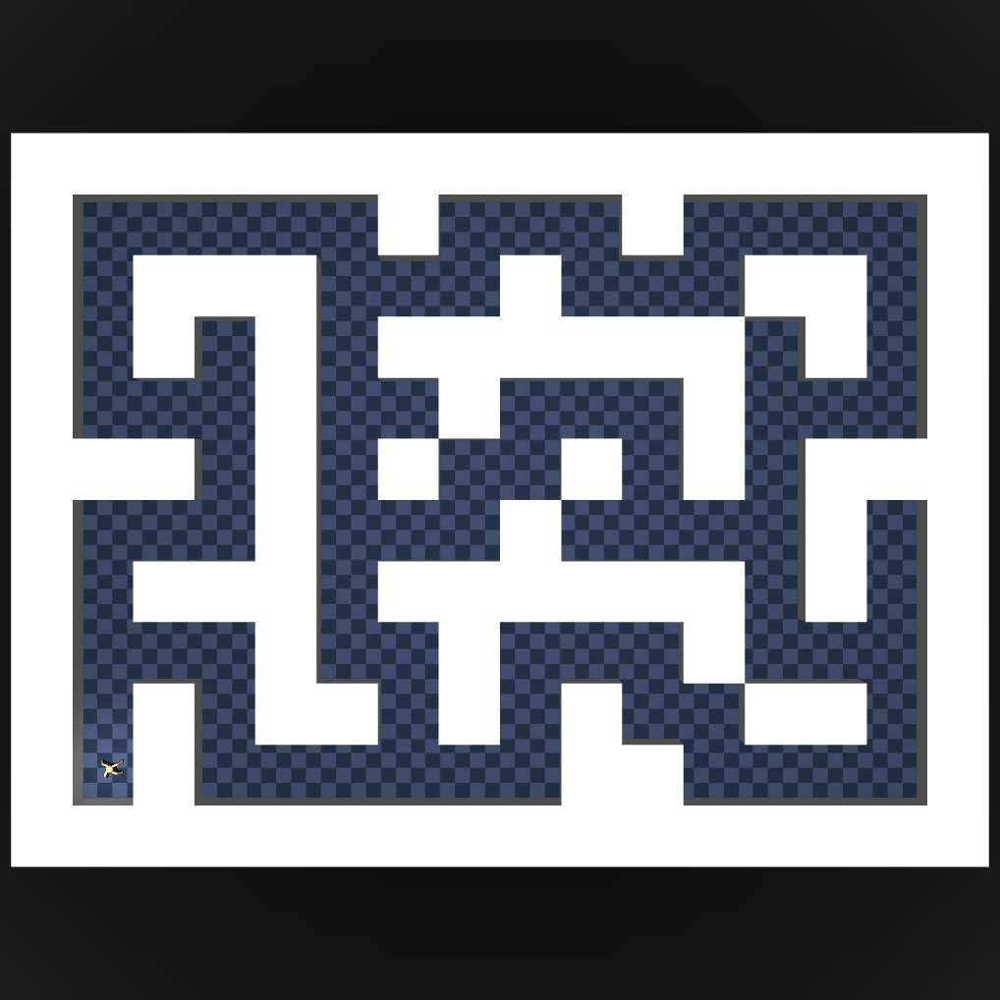
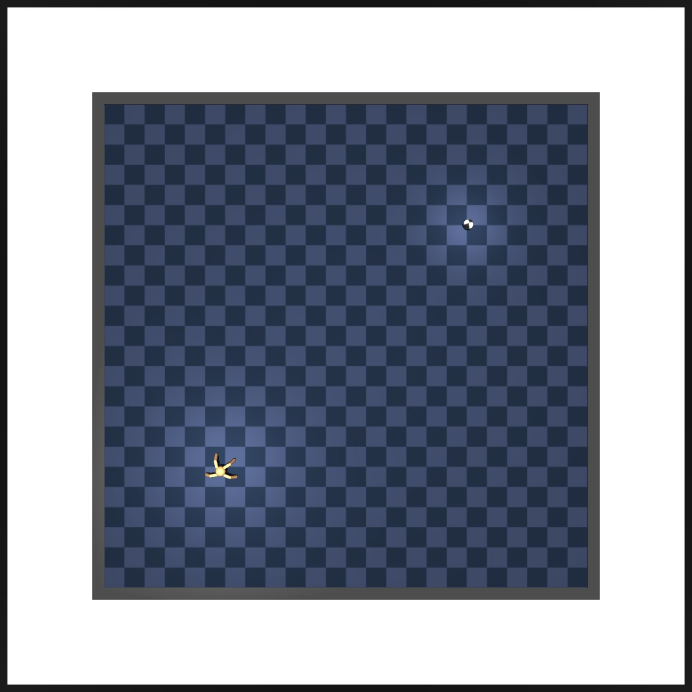
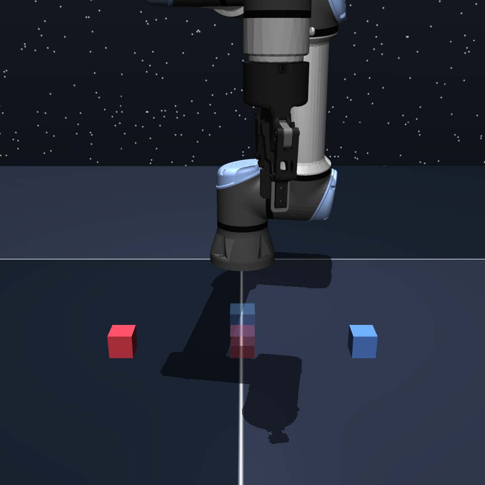
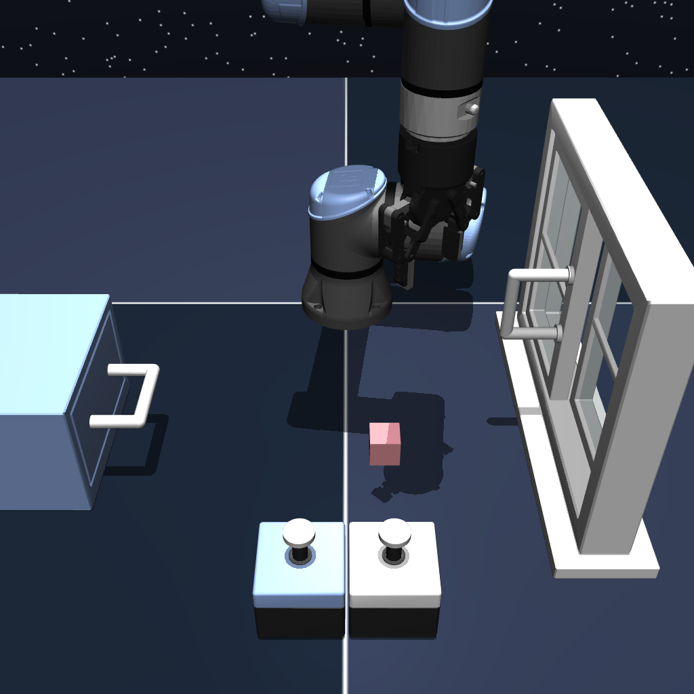
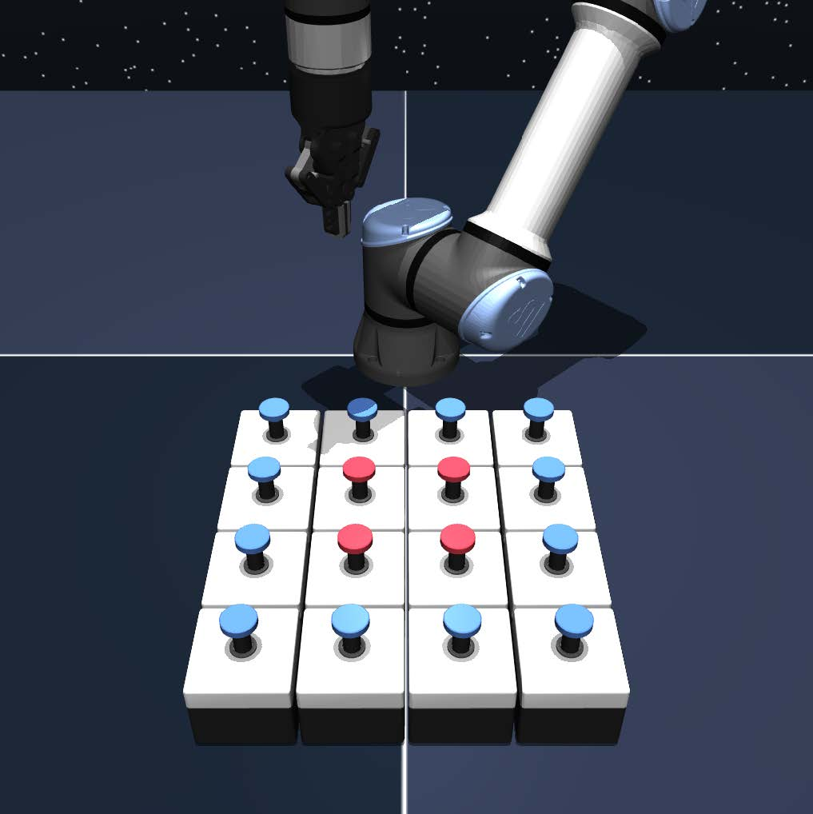
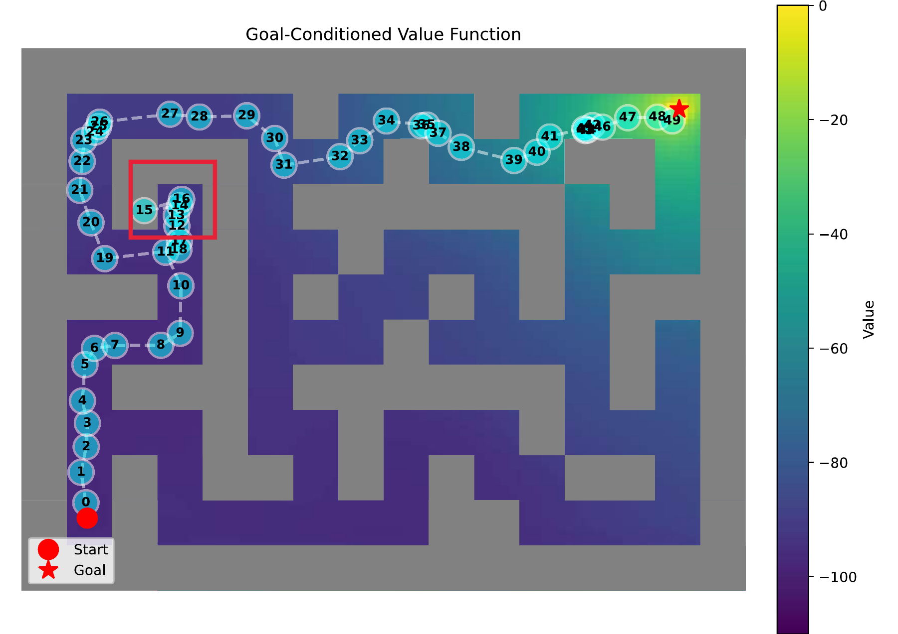
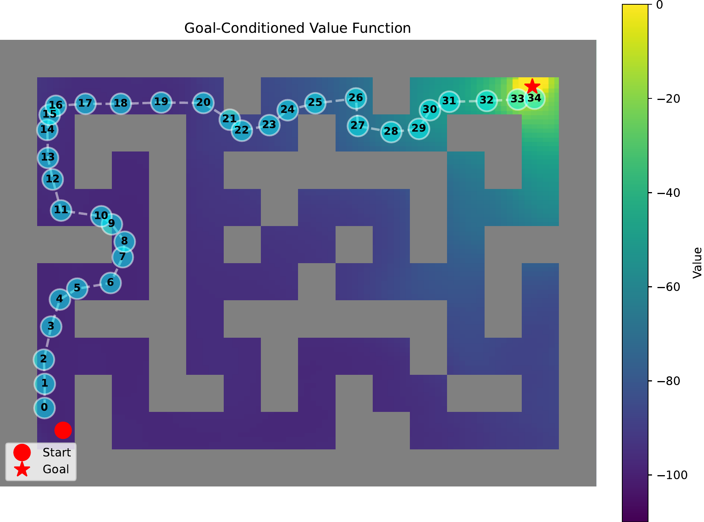
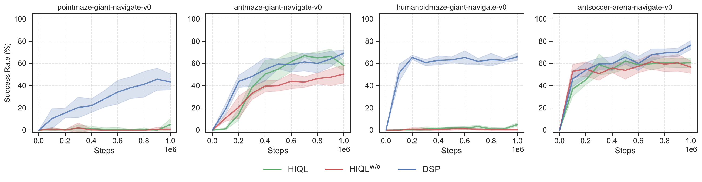

Diffusion Subgoal Planning for Long-Horizon Offline Goal-Conditioned Reinforcement Learning
NeurIPS 2026
1 School of Information and Control Engineering, China University of Mining and Technology
2 School of Computer Science and Engineering, South China University of Technology
* Corresponding author: Xuesong Wang





Abstract
Offline goal-conditioned reinforcement learning (GCRL) learns goal-directed policies from reward-free data, but in long-horizon tasks, goal-conditioned value functions often provide unstable guidance due to sparse rewards and discounting. Hierarchical methods partially mitigate this issue via subgoal decomposition; however, high-level decision-making still relies on noise-sensitive value estimates, leading to unstable behavior in complex environments. We address this limitation by proposing Diffusion Subgoal Planning (DSP), a diffusion-based framework for high-level subgoal generation. DSP casts high-level planning as guided generative inference over goal-conditioned subgoals and learns both conditional and unconditional flows, enabling classifier-free guidance to introduce a goal-directed bias at inference time. By removing explicit value-based guidance from high-level planning, DSP generates reachable and goal-directed subgoals through a generative model while retaining hierarchical execution. Experiments on offline GCRL benchmarks demonstrate that DSP outperforms prior methods on a range of navigation and manipulation tasks, with particularly strong performance in maze environments that require multi-step subgoal planning.
Method
DSP learns to generate subgoals from offline trajectories using flow matching. At inference time, classifier-free guidance steers generation toward the desired goal, while a low-level policy executes each subgoal. High-level planning uses no explicit value-function guidance; the low-level learning retains a value function.
Subgoal Planning
AntMaze GiantHIQLw/o

DSP Ours

Experiments
OGBenchWe evaluate DSP on 18 locomotion and manipulation tasks from OGBench, comparing it with flat and hierarchical offline goal-conditioned RL methods.
Scroll horizontally to compare all methods.
| Task | Flat policies | Hierarchical policies | ||||||
|---|---|---|---|---|---|---|---|---|
| GCBC | CFGRL | GCIVL | OTA | Pi-HIQL | HIQL | HIQLw/o | DSP | |
| pointmaze- | 4.8 ± 6.9 | 65.2 ± 5.3 | 70.2 ± 5.9 | 85.4 ± 5.0 | 62.2 ± 7.3 | 70.6 ± 7.0 | 74.6 ± 6.1 | 90.6 ± 3.8 |
| pointmaze- | 25.6 ± 6.3 | 74.6 ± 2.9 | 42.6 ± 5.3 | 87.6 ± 9.2 | 80.2 ± 13.3 | 39.4 ± 2.3 | 50.0 ± 10.4 | 93.6 ± 2.9 |
| pointmaze- | 2.2 ± 4.9 | 3.4 ± 2.5 | 1.0 ± 2.2 | 69.4 ± 11.6 | 3.0 ± 2.9 | 5.0 ± 5.0 | 0.0 ± 0.0 | 43.4 ± 7.2 |
| pointmaze- | 23.8 ± 5.7 | 49.2 ± 5.1 | 43.6 ± 2.5 | 40.2 ± 5.4 | 33.6 ± 9.0 | 8.8 ± 6.4 | 8.2 ± 6.2 | 51.0 ± 5.8 |
| antmaze- | 32.6 ± 8.5 | 34.8 ± 5.5 | 74.6 ± 8.0 | 91.6 ± 2.4 | 90.8 ± 2.7 | 93.2 ± 1.3 | 92.8 ± 2.4 | 98.4 ± 0.5 |
| antmaze- | 23.0 ± 2.0 | 18.4 ± 5.7 | 15.0 ± 6.6 | 89.2 ± 2.3 | 81.8 ± 3.1 | 87.8 ± 1.5 | 88.6 ± 2.1 | 92.0 ± 4.1 |
| antmaze- | 0.0 ± 0.0 | 0.0 ± 0.0 | 0.0 ± 0.0 | 68.4 ± 3.4 | 50.4 ± 3.7 | 58.2 ± 4.7 | 50.4 ± 8.0 | 69.2 ± 2.9 |
| antmaze- | 26.4 ± 2.2 | 35.2 ± 7.5 | 35.6 ± 5.7 | 48.4 ± 2.6 | 49.4 ± 2.7 | 43.4 ± 6.6 | 40.8 ± 4.1 | 59.8 ± 1.3 |
| humanoidmaze- | 6.8 ± 1.3 | 7.0 ± 2.3 | 32.6 ± 4.0 | 82.4 ± 3.6 | 76.2 ± 3.8 | 74.8 ± 3.0 | 52.6 ± 4.3 | 89.6 ± 2.9 |
| humanoidmaze- | 1.0 ± 1.4 | 1.2 ± 1.6 | 2.6 ± 1.8 | 76.4 ± 4.0 | 39.0 ± 3.2 | 23.6 ± 2.9 | 7.2 ± 3.4 | 69.4 ± 3.9 |
| humanoidmaze- | 0.0 ± 0.0 | 0.4 ± 0.5 | 0.0 ± 0.0 | 81.4 ± 4.9 | 34.2 ± 3.3 | 5.0 ± 1.6 | 0.0 ± 0.0 | 66.0 ± 3.4 |
| antsoccer- | 5.4 ± 3.0 | 12.2 ± 4.1 | 47.4 ± 7.5 | 39.8 ± 6.5 | 17.8 ± 2.9 | 60.6 ± 4.5 | 56.6 ± 5.5 | 76.6 ± 4.0 |
| antsoccer- | 1.4 ± 0.5 | 3.6 ± 2.1 | 11.6 ± 2.3 | 16.6 ± 3.5 | 2.4 ± 1.5 | 8.4 ± 1.5 | 7.2 ± 1.5 | 15.2 ± 2.4 |
| cube- | 5.2 ± 2.2 | 7.6 ± 2.3 | 53.4 ± 5.4 | 10.0 ± 4.2 | 1.2 ± 1.1 | 11.8 ± 2.3 | 21.8 ± 4.0 | 41.0 ± 6.1 |
| cube- | 1.0 ± 1.0 | 1.6 ± 1.1 | 31.6 ± 3.0 | 2.2 ± 0.8 | 0.0 ± 0.0 | 3.6 ± 2.2 | 9.4 ± 4.4 | 30.8 ± 8.4 |
| scene | 4.8 ± 2.6 | 17.2 ± 3.3 | 44.6 ± 2.9 | 23.4 ± 7.1 | 16.6 ± 3.1 | 37.2 ± 4.2 | 42.0 ± 5.2 | 62.6 ± 5.9 |
| puzzle- | 3.0 ± 1.2 | 2.0 ± 1.2 | 4.2 ± 2.5 | 4.6 ± 3.2 | 5.6 ± 1.5 | 8.8 ± 1.3 | 16.0 ± 2.9 | 13.4 ± 2.3 |
| puzzle- | 0.0 ± 0.0 | 0.0 ± 0.0 | 7.8 ± 2.6 | 3.4 ± 1.8 | 13.6 ± 8.4 | 7.8 ± 2.6 | 5.4 ± 2.3 | 27.6 ± 2.9 |
| Total | 167.0 | 333.6 | 518.4 | 920.4 | 658.0 | 648.0 | 623.6 | 1090.2 |
Results average success over five test-time goals and five seeds; ± denotes standard deviation. Bold means reach at least 95% of the highest mean in each task, following the paper’s highlighting rule. This threshold is not a statistical significance test. Total sums the 18 task means. Task names omit -navigate-v0 for navigation and -play-v0 for manipulation. HIQLw/o denotes HIQL without subgoal representation.
DSP has the highest mean success rate on 11 of the 18 tasks in this table. Performance varies by task: OTA leads on several giant-maze tasks, and GCIVL leads on the two cube tasks.
Learning curves
Full-size figure
Citation
@inproceedings{zhang2026dsp,
title = {Diffusion Subgoal Planning for Long-Horizon Offline Goal-Conditioned Reinforcement Learning},
author = {Zhang, Hengrui and Cheng, Yuhu and Chen, C. L. Philip and Wang, Xuesong},
booktitle = {Advances in Neural Information Processing Systems},
year = {2026}
}